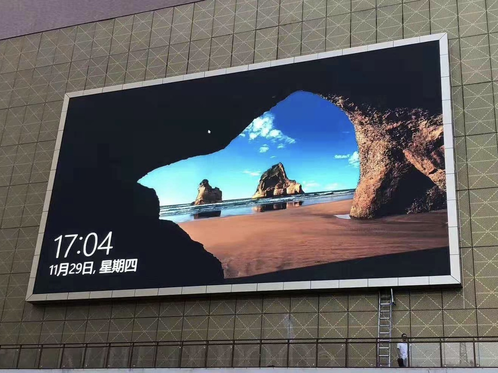
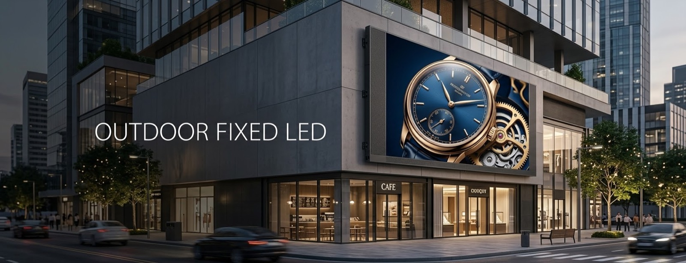

By David
A media facade is bought long before it is ordered, and often by someone other than the building owner. The deal structure decides who the seller is, what the schedule looks like, and whether the screen is viewed as equipment or as part of the building. Getting that structure wrong wastes the technical work.
This guide explains how a facade LED project is procured, and where the display decision actually sits.
Most facade projects follow one of three shapes, and they lead to different buyers.
| Structure | Who buys, and what it means |
|---|---|
| Owner-funded | The property owner buys the display as part of the building, usually inside a construction or design-build contract. The screen is an asset and a design feature. |
| Media-operator funded | An advertising or media operator funds and operates the display under an agreement with the owner, recovering cost from advertising. The operator buys the screen and controls its content. |
| Design-build | A single team carries design and construction, and the display is a package inside it. The owner sees one contract and the team chooses the supply chain. |
The buyer is therefore the owner, the media operator, or the design-build contractor depending on the deal. A supplier that assumes the owner is the buyer can spend a year talking to the wrong party.
When a media operator is funding the display, the specification is driven by what the screen can earn as well as what it can show.
Uptime matters more, because a dark screen is lost revenue. Content flexibility matters, because the operator sells the surface to advertisers. And service response becomes a commercial term rather than a maintenance preference, because downtime is measured in money.
An owner-funded screen has different priorities: it serves the building's identity and its tenants, and it is judged on how it looks and what it costs to run.
A facade display project runs in a fixed order, and each stage depends on the one before.
First the approval envelope: what size, position and brightness the jurisdiction will permit. Then the design, where the screen is selected and the structure that carries it is engineered. Then documentation for permits and construction. Then manufacture, then rigging and installation, then commissioning and content.
Because the approval fixes the screen, and the structure depends on the screen's weight and mounting, the display selection sits near the front of the sequence rather than at the purchasing stage.

A facade display touches several disciplines at once: the architect, the facade or curtain wall consultant, the structural engineer, the electrical engineer, and the contractor who will install it.
Each needs something from the display manufacturer — interface dimensions, loads, power, and the service method — and each needs it at a different point. A supplier that can supply a complete, consistent technical package early is easier to build with than one that answers questions one at a time.
The technical file for a facade project is broader than for an interior installation.
Dimensioned drawings and the mounting interface. Weight and load data for the structural engineer. Brightness and dimming capability for the permit. Power consumption and heat load for the electrical design. And the maintenance access method, because at height it determines both the design and the operating cost.
Our factory runs 8 IC production lines and 7 LED SMT production lines under ISO 9001:2015, with CE, FCC and RoHS certification, a 15 to 20 working day lead time and a three-year warranty. For facade work the usual match is the D-PRO outdoor series and, where wind and weather exposure are severe, the COB ZH series.
For the approvals side, see facade LED permits and sign codes and facade structural integration.
Send your specifications for a detailed LED display price quote with UL/ETL certification.
Request Price Quote Chat on WhatsApp